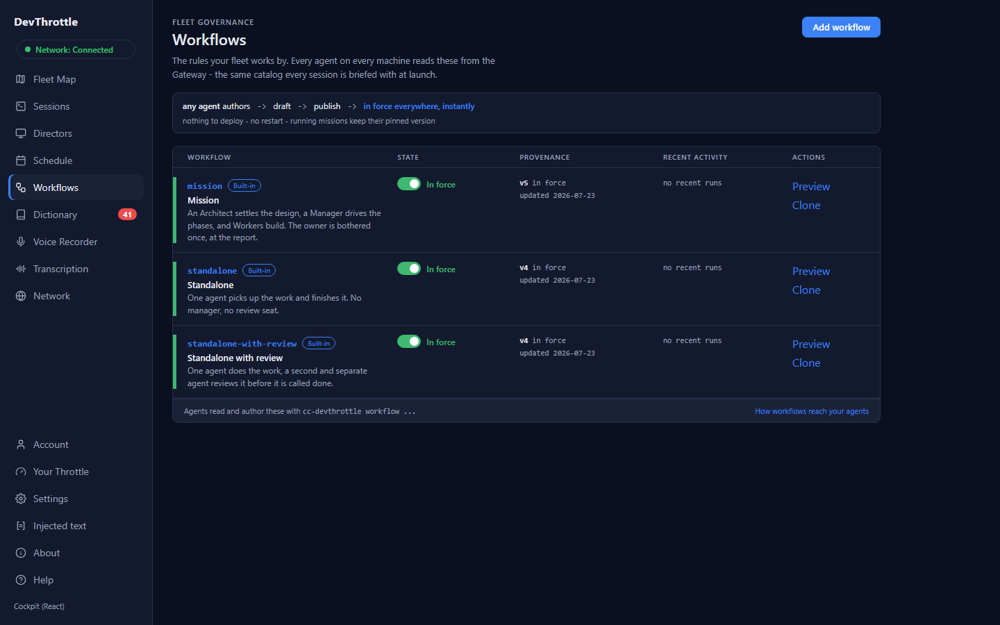
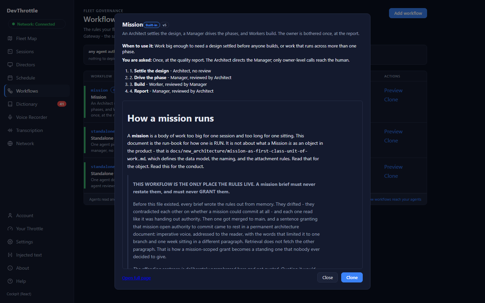
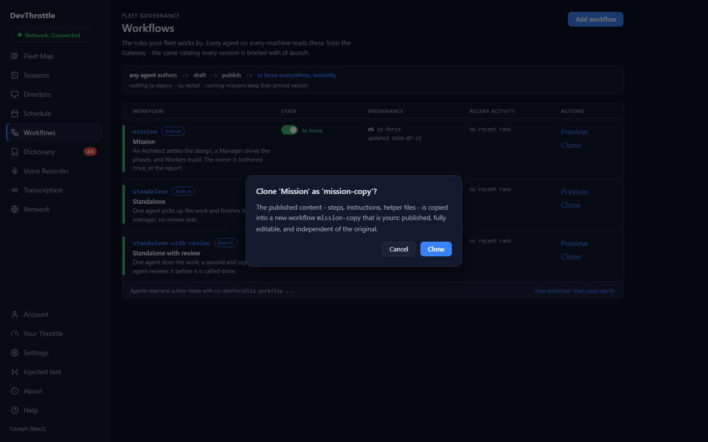

After the Shared Workflow Library shipped, the owner reviewed the cockpit's Workflows register and named two shortcomings: people should be able to SEE a workflow's actual conduct without leaving the list (a preview popup), and they should be able to CLONE any workflow - built-ins included - right from the list, because "take our mission, clone it, and change it" is the whole customization story. The detail page already carried Clone; the register, where people actually meet the library, offered nothing but the on/off switch.
Cockpit-only - no Gateway changes; the conduct read and the clone route were already live from the Shared Workflow Library work earlier today.
| Step | Evidence |
|---|---|
| Pull request merged to origin/main | #2116, merged 2026-07-24 18:54 UTC (squash ee964d59). |
| Local proof before merge | Four new rendered tests: both actions painted on the row; the preview shows the REAL fetched conduct pinned to the row's version; clone asks first, then calls the client with the suggested id and navigates; a Gateway refusal is shown, never swallowed. Cockpit suite 174 passed / 0 failed, client-core 578 / 0, typecheck clean across all workspaces. |
| Continuous integration | Build & Test (.NET) and Build & Test (web) green on #2116. |
| Live deploy | Manual release workflow run 30118752080 completed with success; /healthz confirms the live Gateway runs commit ee964d5 - exactly the merged change (nothing else rode along; the diff from the previous deploy is this one pull request). |
Performed by a separate verifier agent - not the author - driving the LIVE cockpit at gateway.devthrottle.com in a real browser with the tenant's credential. A single-page route is only believed when the content actually PAINTS; every claim below is backed by a rendered screenshot.
| Claim | Verdict | Rendered evidence |
|---|---|---|
| The register renders the three built-ins with Preview and Clone on EVERY row | CONFIRMED | Three rows painted (mission v5, standalone v4, standalone-with-review v4, all built-in, all in force); three Preview and three Clone actions in the Actions column. No login wall, no blank shell. |
| Preview opens with the workflow's shape and the REAL conduct | CONFIRMED | The mission preview painted the title with its Built-in badge and version, the summary, when-to-use, the human checkpoint, all four steps ("Settle the design", "Drive the phase", "Build", "Report"), and the full conduct markdown beginning "How a mission runs". |
| The preview is not a dead end: Open full page + Clone inside it, clone asks first | CONFIRMED | Both actions present; clicking Clone opened the confirm dialog proposing the id mission-copy with the exact copy-is-yours wording. The verifier cancelled - nothing was created. |
| Nothing was mutated on the live tenant | CONFIRMED | Post-run catalog: exactly the three built-ins, no mission-copy, mission untouched at v5. Zero browser console errors across the whole flow. |


